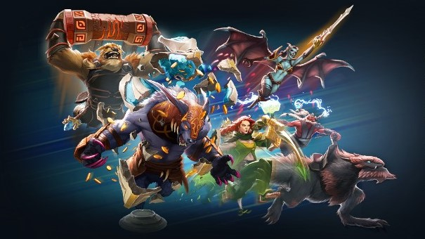
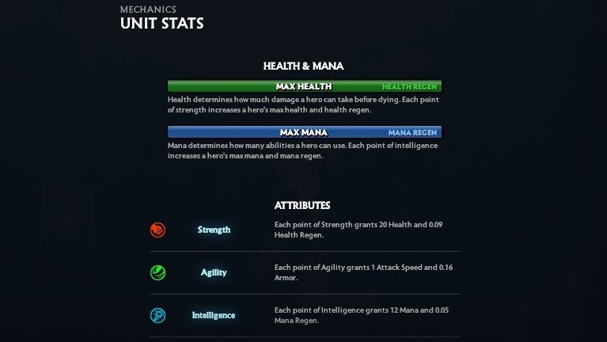
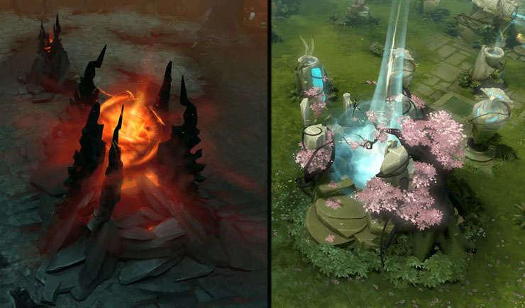

Gameplay

Doto 2 is a top down game where you need to click a point in the map to move your hero (character). There are also abilities and items that you can map to your keyboard, so you can cast them with the press of a button. You need to strategize together with your team to win the game.
Roles

Each heroes have different amount of health and mana, with their own special set of abilities. There are also attributes which are strength, agility, and intelligence that increases their stats accordingly. These varieties made each heroes serve a different role in a game, such as carry, support, and tank.
Objective

The objective of the game is to destroy the enemy's ancient (base). This can be achieved by destroying the towers that are protecting the path to the enemy's base. Of course, the enemy will also try to defend their base and you will also need to keep an eye on the enemy's attack on your base. All of these makes teamwork a crucial part of Doto 2's gameplay.